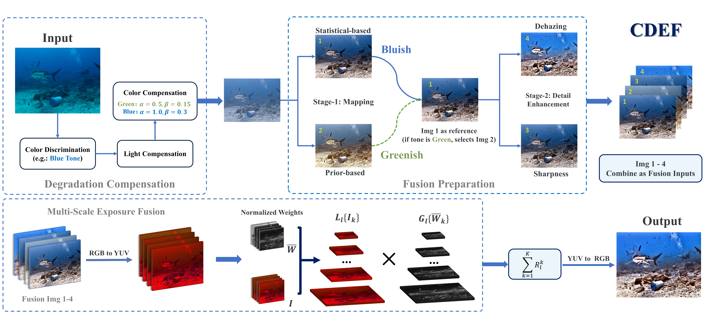
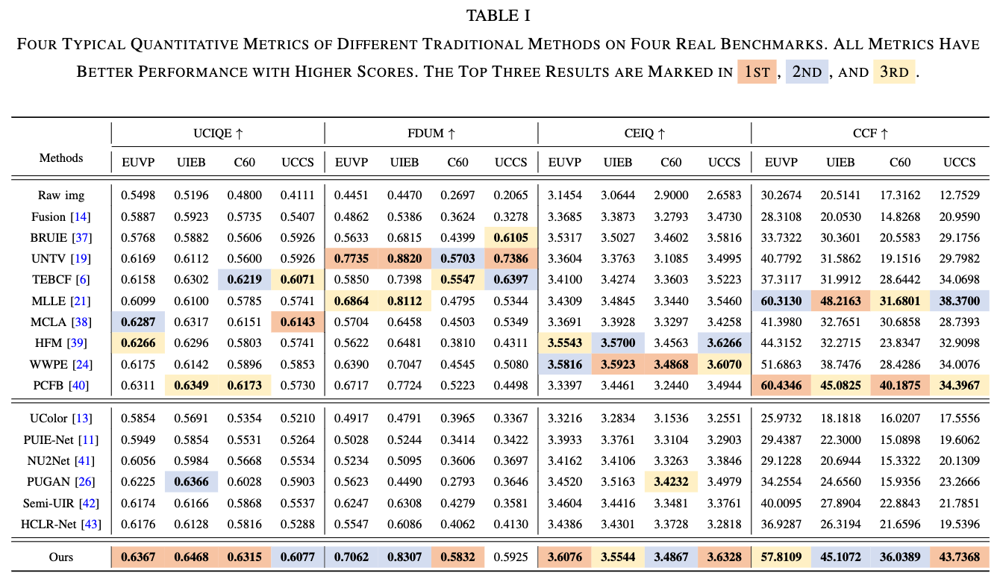
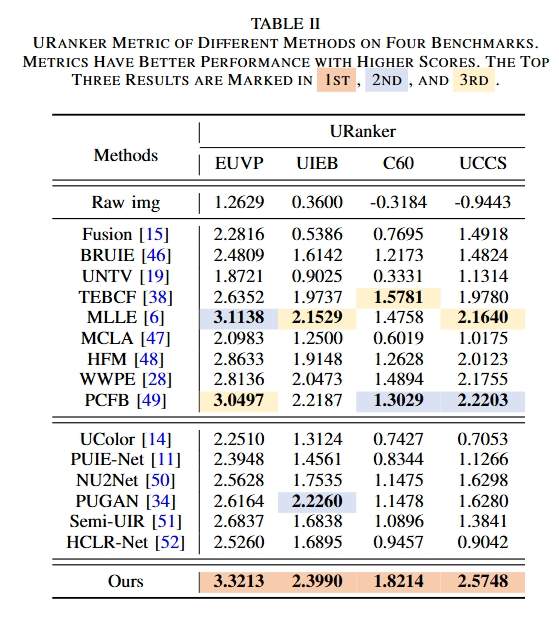
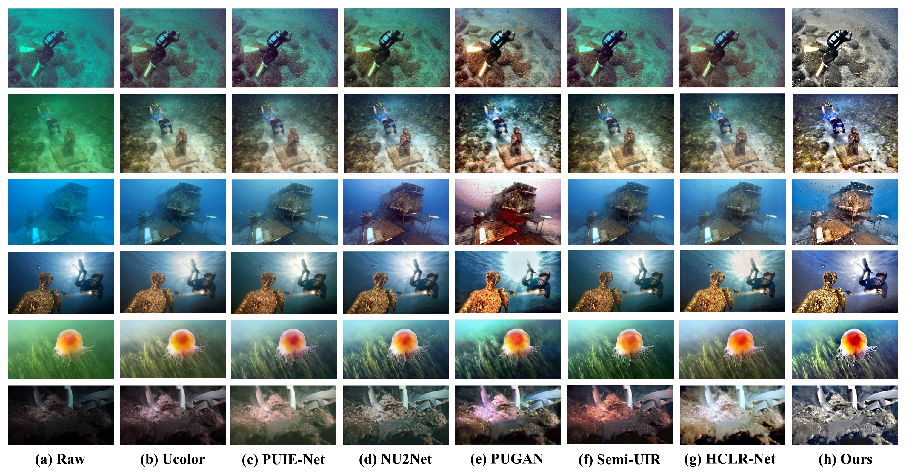
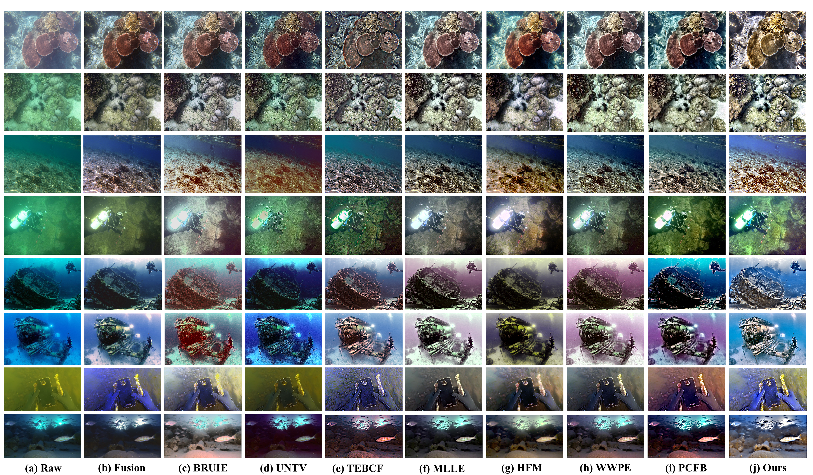

Marine observation faces significant challenges due to the complex optical characteristics of underwater environments. The combined effects of light attenuation and scattering lead to severe image degradation, while the dynamic nature of underwater conditions introduces additional variability that traditional enhancement methods struggle to address. This work introduces a novel framework for underwater image enhancement that leverages multi-domain analysis to achieve robust performance across diverse marine environments. The proposed method incorporates an adaptive scene analysis mechanism that determines optimal enhancement strategies based on environmental characteristics. The enhancement pipeline consists of two key components: First, a comprehensive degradation analysis module that addresses both illumination irregularities and wavelength-dependent attenuation through domain-specific compensation. Second, an advanced fusion scheme that combines multiple enhanced representations using an optimized pyramid model, enabling effective preservation of both global contrast and local details. The framework excels in challenging scenarios such as turbid waters and non-uniform lighting conditions, where conventional methods often fail. Extensive experiments conducted on multiple benchmark datasets demonstrate that our approach achieves superior performance in terms of both objective metrics and subjective visual quality. The results show consistent improvement in visibility, color fidelity, and detail preservation across varying underwater conditions, making it particularly suitable for marine observation and analysis tasks.
🔍 Overview
Overview of the proposed CDEF. The raw underwater images are initially analyzed to distinguish their color tones (illustrated here using a Blue tone image). These images are processed for compensating the degradation of luminance and color. The compensated images are divided into two versions using different tone mapping methods. Additional images are generated by selecting one type of image (in this flowchart, the prior-based mapping result) for sharpness and dehazing operations based on its color tone. After obtaining four images, they are transformed into YUV color space, and normalized weights are calculated based on image characteristics. The images and weight are decomposed into Laplacian and Gaussian pyramids, respectively. The two pyramids are merged and reconstructed at corresponding levels. Finally, the fusion results from the pyramid merging are transformed back to the RGB space, obtaining our enhanced results.

📊 Quantitative Analysis
Quantitative Comparisons of the different methods on four datasets are reported in Tables I and II. Our method achieves a relatively high overall evaluation score in Table I. Notably, our method achieves the highest score in the C60 dataset, demonstrating our performance preservation under challenging scenarios.


👁️ Visual Comparisons
The visual results of traditional methods are presented in below figures. The raw images used are representative and challenging underwater scenes selected from the UIEB and C60 datasets. It is evident from the results that the compared methods are not perfectly adapted to all the different scenarios. Most of the methods achieve acceptable dehazing effects (shown in the first two rows), but the main issues lie in color and brightness enhancement.


📚 BibTeX
@article{cdef_2025_JOE,
title={Underwater Scene Enhancement via Adaptive Color Analysis and Multi-Space Fusion},
author={Yuan, Jieyu and Zhang, Yuhan and Cai, Zhanchuan},
journal={10.1109/JOE.2025.3591405},
year={2025}
}